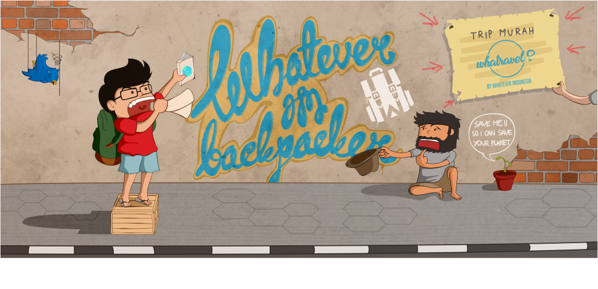

Apa sih Backpacker itu ?
Backpacker? Ya, istilah itu mungkin saat ini sudah sering kita dengar. Backpacker diadopsi dari istilah asing, tepatnya Bahasa Inggris. Kata dasarnya adalah backpack yang artinya tas ransel (tas gendong). Sampai saat ini, istilah backpack populer digunakan oleh para pelancong atau turis sebagai sebutan untuk tas bawaan mereka. Jika backpack adalah sebutan untuk tasnya, maka backpacker adalah sebutan untuk orang yang membawa tas tersebut.
Apakah semua turis termasuk backpacker? Hal Pembeda Backpacker Turis Biaya / pengeluaran Sehemat mungkin Tergantung jadwal tur Rencana perjalanan Bebas menyusun sendiri Tergantung jadwal tur. Turis akan bergantung pada rencana perjalanan dan jadwal kegiatan yang ditetapkan oleh tour guide atau panitia perjalanan/kegiatan, sedangkan seorang backpacker bebas memutuskan semuanya sendiri.
Mengapa Harus Backpacker
Backpacker tidak hanya semata menjelajah suatu destinasi, lebih dari itu, backpacking mengajarkan kita untuk menemukan siapa kita sebenarnya.
Apakah berlibur dengan mode backpacking lebih menguntungkan ataupun merugikan? Tergantung siapa yang akan menjalaninya. Jika menghemat biaya adalah prioritas Anda maka backpacking adalah solusi liburan yang tepat bagi Anda.
